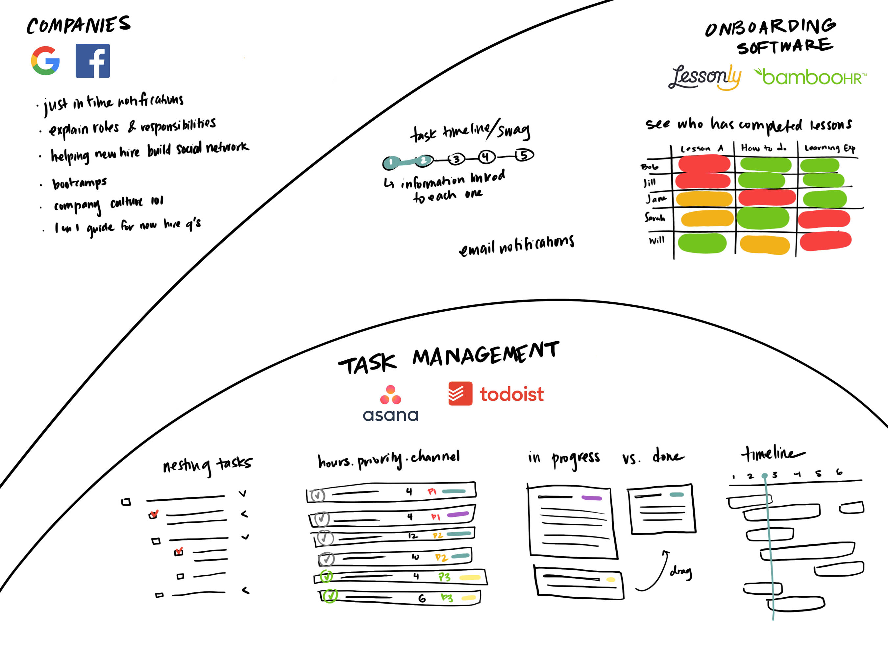

Providing new hires with the information they need to quickly become contributing employees is a problem that every company and team deals with. The team I worked with solved this by creating a massive document of links for new hires to scan, with need to complete tasks mentioned in various places. The large amount of information and lack of organization made it difficult for new hires to understand the best way to get started.
I designed and coded an app for Demo Engineering new hires that provides onboarding information in a cohesive format, surfacing task to do's and resources exactly when they are relevant.
The initial amalgam of documents mixed times, tasks, and resources in a difficult to parse format. After laying out the different moving parts of the Onboarding process and talking to members of the team, I decided the best solution was to create an app with...
1. Preset to-do's
2. A general overview of the Onboarding process
3. Resource modules for overarching tasks
4. Manager updates on new hire progress
These features informed my organization of the Onboarding resources. I laid out the tasks and information into 6 task sections to appear to the new hire in order (only appearing after the previous section was completed). These tasks also referenced 4 big task modules to be completed.
Information Architecture chart with 6 task sections denoted by hexagons,
4 large task modules denoted by diamonds.
With the information in mind, I looked at a range of Onboarding products from entire company Onboarding bootcamps to simple task management applications. I found that the necessary features for task management were due dates, prioritization, editing, and addition of tasks. Great onboarding programs highlighted just in time information.
I then sketched ideas for the different components of the app, focusing on creating a simple interface that would not confuse new hires.
After creating an InVision Prototype, I conducted usability tests with 6 people (3 team members and 3 non-employees). Participants were shown the prototype and asked to use it to learn about the company, just as new hires would utilize the app. Based on feedback I made a few UX changes.
After completing the design of the app, I spent three weeks programming it on the Salesforce platform. I created all of the tasks and information modules as records and then used Apex classes and SQL to query this information. The front end Lightning code (Salesforce's version of HTML/CSS/JS) then allowed the user to interact with the app's main features.
As the app is created in Salesforce, the Demo Engineering team is easily able to maintain the app and change it based on what information new hires need to learn.